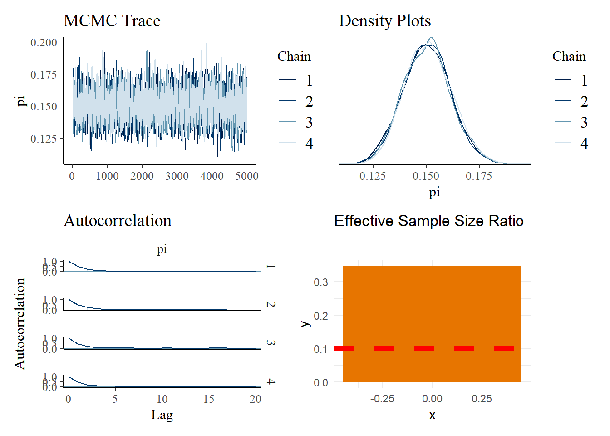
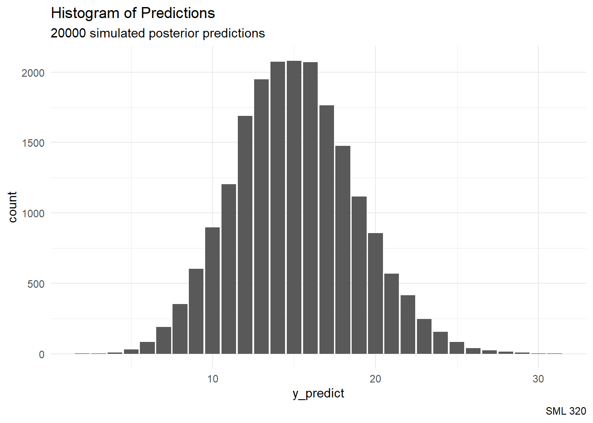

library("patchwork")
library("tidyverse")ps6_code
8.6 and 8.7
a
round(qbeta(c(0.025, 0.975), 4,5), 4)[1] 0.1570 0.7551b
round(qbeta(c(0.2, 0.8), 4,5), 4)[1] 0.3032 0.5837c
round(qgamma(c(0.025, 0.975), 1,8), 4)[1] 0.0032 0.4611d
round(qgamma(c(0.005, 0.995), 1,5), 4)[1] 0.0010 1.0597e
round(qnorm(c(0.025, 0.975), 10,2), 4)[1] 6.0801 13.9199f
round(qnorm(c(0.1, 0.9), -3,1), 4)[1] -4.2816 -1.71848.9
a
prior_prob <- pbeta(0.4, 1, 0.8, lower.tail = FALSE)
posterior_prob <- pbeta(0.4, 4, 3, lower.tail = FALSE)
posterior_prob #print[1] 0.8208b
prior_odds <- prior_prob / (1 - prior_prob)
posterior_odds <- posterior_prob / (1 - posterior_prob)
BF <- posterior_odds / prior_odds
BF #print[1] 2.312168The plausibility of the alternative hypothesis increased
8.10
a
prior_prob <- pnorm(5.2, 10, 10)
posterior_prob <- pnorm(5.2, 5, 3)
posterior_prob #print[1] 0.5265765b
prior_odds <- prior_prob / (1 - prior_prob)
posterior_odds <- posterior_prob / (1 - posterior_prob)
BF <- posterior_odds / prior_odds
BF #print[1] 2.411888The plausibility of the alternative hypothesis increased
8.14
a
- Having a parameter of interest \(\pi \in [0,1]\) suggests using a beta distribution
- Having a fixed sample size \(n\) suggests using a binomial distribution
d
library("bayesrules")
library("janitor")
library("tidyverse")
data(pulse_of_the_nation)
pulse_of_the_nation |>
janitor::tabyl(climate_change) |>
janitor::adorn_totals() climate_change n percent
Not Real At All 150 0.150
Real and Caused by People 655 0.655
Real but not Caused by People 195 0.195
Total 1000 1.00015 percent of the people survey responded with “Not Real At All”.
e
With \(y = 150\) choosing “Not Real At All” out of \(n = 1000\) surveyed, we obtain
bayesrules::summarize_beta_binomial(1, 2, 150, 1000) |>
mutate_if(is.numeric, round, digits = 4) model alpha beta mean mode var sd
1 prior 1 2 0.3333 0.0000 0.0556 0.2357
2 posterior 151 852 0.1505 0.1499 0.0001 0.0113round(qbeta(c(0.025, 0.975), 151, 852), 4)[1] 0.1291 0.17338.15
a
Since the credible interval has values that are all greater than 0.1, the credible interval is evidence toward the alternative hypothesis.
b
prior_prob <- pbeta(0.1, 1, 2, lower.tail = FALSE)
posterior_prob <- pbeta(0.1, 151, 852, lower.tail = FALSE)
posterior_prob #print[1] 0.9999997c
prior_odds <- prior_prob / (1 - prior_prob)
posterior_odds <- posterior_prob / (1 - posterior_prob)
BF <- posterior_odds / prior_odds
BF #print[1] 750017.6The plausibility of the alternative hypothesis greatly increased
8.16
a
library("rstan")
bb_model <- "
data {
int<lower = 0, upper = 1000> Y;
}
parameters {
real<lower = 0, upper = 1> pi;
}
model {
Y ~ binomial(1000, pi);
pi ~ beta(1, 2);
}
"
climate_change_simulation <- stan(model_code = bb_model,
data = list(Y = 150),
chains = 4,
iter = 5000*2,
refresh = 0,
seed = 320)b
library("patchwork")
p1 <- bayesplot::mcmc_trace(climate_change_simulation, pars = "pi", size = 0.1) +
labs(title = "MCMC Trace")
p2 <- bayesplot::mcmc_dens_overlay(climate_change_simulation, pars = "pi") +
labs(title = "Density Plots")
p3 <- bayesplot::mcmc_acf(climate_change_simulation, pars = "pi") +
labs(title = "Autocorrelation")Warning: The `facets` argument of `facet_grid()` is deprecated as of ggplot2 2.2.0.
ℹ Please use the `rows` argument instead.
ℹ The deprecated feature was likely used in the bayesplot package.
Please report the issue at <https://github.com/stan-dev/bayesplot/issues/>.n_eff <- bayesplot::neff_ratio(climate_change_simulation, pars = "pi")
p4 <- data.frame(x = 0, y = n_eff) |>
ggplot(aes(x = x, y = y)) +
geom_bar(fill = "#E77500", stat = "identity") +
geom_hline(yintercept = 0.10, color = "red",
linetype = 2, linewidth = 2) +
labs(title = "Effective Sample Size Ratio") +
theme_minimal()
# patchwork
(p1 + p2) / (p3 + p4)
- there appears to be nothing unusual about the MCMC traces
- the density plots seem to align with each other
- the autocorrelation drops off like expected for Markov chains
c
bayesplot::neff_ratio(climate_change_simulation, pars = "pi") |>
round(digits = 4)[1] 0.3478- the effective sample size is greater than 0.1 (as wanted)
bayesplot::rhat(climate_change_simulation, pars = "pi") |>
round(digits = 4)[1] 1.0005- Since R-hat is “close” to 1.0, we appear to have stability in the MCMC chains.
8.17
a
library("broom.mixed")
broom.mixed::tidy(climate_change_simulation,
conf.int = TRUE, conf.level = 0.95) |>
mutate_if(is.numeric, round, digits = 4)# A tibble: 1 × 5
term estimate std.error conf.low conf.high
<chr> <dbl> <dbl> <dbl> <dbl>
1 pi 0.150 0.0112 0.129 0.173b
climate_change_df <- as.data.frame(climate_change_simulation,
pars = "pi")
climate_change_df |>
mutate(exceeds = pi > 0.10) |>
tabyl(exceeds) exceeds n percent
TRUE 20000 18.18
a
climate_change_df <- climate_change_df |>
mutate(y_predict = rbinom(length(pi), size = 100, prob = pi))
ggplot(climate_change_df, aes(x = y_predict)) +
stat_count() +
labs(title = "Histogram of Predictions",
subtitle = "20000 simulated posterior predictions",
caption = "SML 320") +
theme_minimal()
b
climate_change_df %>%
summarize(pred_mean = mean(y_predict),
pred_median = median(y_predict),
pred_mode = sample_mode(y_predict),
lower_95 = quantile(y_predict, 0.025),
upper_95 = quantile(y_predict, 0.975)) pred_mean pred_median pred_mode lower_95 upper_95
1 15.0624 15 14.97575 8 23c
climate_change_df |>
mutate(exceeds = y_predict >= 20) |>
tabyl(exceeds) exceeds n percent
FALSE 17588 0.8794
TRUE 2412 0.1206